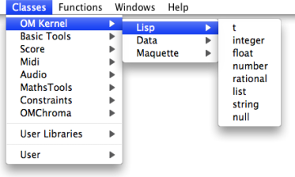
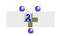
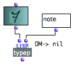

OpenMusic DocumentationHiérarchie de section : OM 6.6 User Manual > Visual Programming II > Control Structures > Predicates > Type Predicates
OpenMusic DocumentationHiérarchie de section : OM 6.6 User Manual > Visual Programming II > Control Structures > Predicates > Type Predicates
Navigation : page précédente | page suivante
Attention, votre navigateur ne supporte pas le javascript ou celui-ci à été désactivé. Certaines fonctionnalités de ce guide sont restreintes.
Type Predicates
A type predicate tests if an object belongs to a type of object . Most of these types are Lisp types, which can be found in the Classes of the OMKernel / Lisp package.

Type predicates are not available in the OM menus or packages, but their name can be typed in a patch editor directly. It conventionally ends with the letter "p" for "predicate".
Numbers
There are several number types, which can be tested by the following predicates.
|
|
|
|
By extension, other predicates test the properties of numbers.
|
|
|
|
|
Other Type Predicates
Here are some other frequently used type predicates :
Predicate |
Returns "t" for |
Example |
|---|---|---|
characterp |
the name of a character that has a printable glyph. |
#\Space ; #\a ... -> t |
symbolp |
something that can be named but numbers, strings, lists, some characters. |
'cow ; note ; 2-ERz -> t |
atom |
anything not between parenthesis but strings. |
A ; 38 ; -> t |
listp |
anything between parenthesis, or nil. In Lisp, nil = empty list. |
(A B C) ; (A (B C) -> t |
consp |
(A B) ; (A (B C)) -> t (A) -> nil |
|
stringp |
anything between inverted commas. |
"vangogh#\Tab;;2" -> t |
functionp |
function names and function boxes on "lambda" mode. |
 -> t |
nullp |
anything that is nil. |
nil -> t ; ( ) -> t |
typep |
an object of a given type. |
 |
Références :
CAR, CDR, CADR, CDDR, CADDR...
Elementary Lisp functions, allowing the access to one or more elements in a list.
Lisp fonctions are actually linked list. Lists are actually "conses" (or "pairs") made of a first element and a pointer to the rest (or "tail") of the list (another cons). These two parts of the list are accessed with the CAR and CDR functions, respectively.
Let the following list be : (A B C D).
CAR (A B C D) = A.
CDR (A B C D) = (B C D).
CDR (B) => NIL [this list has no CDR]
"CAR" and "CDR" are technical terms which originally refer to the way data is handled by the computer. CAR is the acronym of "Contents of the Address part of Register number". CDR is the acronym of "Contents of the Decrement part of Register number".
The rest of the functions below are built upon these two kernel accessors.
CADR (A B C D) = B. CADR means CAR of the CDR.
CDDR (A B C D) = (C D). CDDR means CDR of the CDR.
CADDR (A B C D) = C. CADDR means CAR of the CDDR.
NTHCDR (A B C D) = NTH CDR of the list – N must be specified as argument. NTHCDR 3 (A B C D) = (D).
And so on...
Plan :
Navigation : page précédente | page suivante
A propos...(c) Ircam - Centre Pompidou